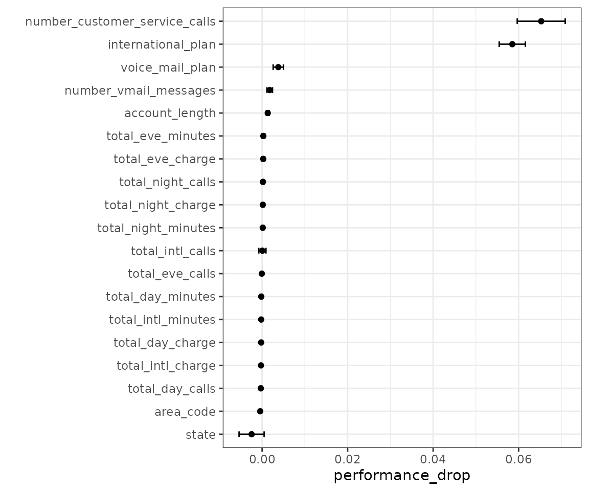

Evaluating different predictor sets
Source:vignettes/evaluating-different-predictor-sets.Rmd
evaluating-different-predictor-sets.RmdWorkflow sets are collections of tidymodels workflow objects that are created as a set. A workflow object is a combination of a preprocessor (e.g. a formula or recipe) and a parsnip model specification.
For some problems, users might want to try different combinations of preprocessing options, models, and/or predictor sets. In stead of creating a large number of individual objects, a cohort of workflows can be created simultaneously.
In this example, we’ll fit the same model but specify different predictor sets in the preprocessor list.
Let’s take a look at the customer churn data from the modeldata package:
There are 19 predictors, mostly numeric. This include aspects of their account, such as number_customer_service_calls. The outcome is a factor with two levels: “yes” and “no”.
We’ll use a logistic regression to model the data. Since the data set is not small, we’ll use basic 10-fold cross-validation to get resampled performance estimates.
library(workflowsets)
library(parsnip)
library(rsample)
library(dplyr)
library(ggplot2)
lr_model <- logistic_reg() %>% set_engine("glm")
set.seed(1)
trn_tst_split <- initial_split(mlc_churn, strata = churn)
# Resample the training set
set.seed(1)
folds <- vfold_cv(training(trn_tst_split), strata = churn)We would make a basic workflow that uses this model specification and a basic formula. However, in this application, we’d like to know which predictors are associated with the best area under the ROC curve.
formulas <- leave_var_out_formulas(churn ~ ., data = mlc_churn)
length(formulas)
#> [1] 20
formulas[["area_code"]]
#> churn ~ state + account_length + international_plan + voice_mail_plan +
#> number_vmail_messages + total_day_minutes + total_day_calls +
#> total_day_charge + total_eve_minutes + total_eve_calls +
#> total_eve_charge + total_night_minutes + total_night_calls +
#> total_night_charge + total_intl_minutes + total_intl_calls +
#> total_intl_charge + number_customer_service_calls
#> <environment: base>We create our workflow set:
churn_workflows <-
workflow_set(
preproc = formulas,
models = list(logistic = lr_model)
)
churn_workflows
#> # A workflow set/tibble: 20 × 4
#> wflow_id info option result
#> <chr> <list> <list> <list>
#> 1 state_logistic <tibble> <opts[0]> <list [0]>
#> 2 account_length_logistic <tibble> <opts[0]> <list [0]>
#> 3 area_code_logistic <tibble> <opts[0]> <list [0]>
#> 4 international_plan_logistic <tibble> <opts[0]> <list [0]>
#> 5 voice_mail_plan_logistic <tibble> <opts[0]> <list [0]>
#> 6 number_vmail_messages_logistic <tibble> <opts[0]> <list [0]>
#> 7 total_day_minutes_logistic <tibble> <opts[0]> <list [0]>
#> 8 total_day_calls_logistic <tibble> <opts[0]> <list [0]>
#> 9 total_day_charge_logistic <tibble> <opts[0]> <list [0]>
#> 10 total_eve_minutes_logistic <tibble> <opts[0]> <list [0]>
#> 11 total_eve_calls_logistic <tibble> <opts[0]> <list [0]>
#> 12 total_eve_charge_logistic <tibble> <opts[0]> <list [0]>
#> 13 total_night_minutes_logistic <tibble> <opts[0]> <list [0]>
#> 14 total_night_calls_logistic <tibble> <opts[0]> <list [0]>
#> 15 total_night_charge_logistic <tibble> <opts[0]> <list [0]>
#> 16 total_intl_minutes_logistic <tibble> <opts[0]> <list [0]>
#> 17 total_intl_calls_logistic <tibble> <opts[0]> <list [0]>
#> 18 total_intl_charge_logistic <tibble> <opts[0]> <list [0]>
#> 19 number_customer_service_calls_logistic <tibble> <opts[0]> <list [0]>
#> 20 everything_logistic <tibble> <opts[0]> <list [0]>Since we are using basic logistic regression, there is nothing to tune for these models. Instead of tune_grid(), we’ll use tune::fit_resamples() instead by giving that function name as the first argument:
churn_workflows <-
churn_workflows %>%
workflow_map("fit_resamples", resamples = folds)
churn_workflows
#> # A workflow set/tibble: 20 × 4
#> wflow_id info option result
#> <chr> <list> <list> <list>
#> 1 state_logistic <tibble> <opts[1]> <rsmp[+]>
#> 2 account_length_logistic <tibble> <opts[1]> <rsmp[+]>
#> 3 area_code_logistic <tibble> <opts[1]> <rsmp[+]>
#> 4 international_plan_logistic <tibble> <opts[1]> <rsmp[+]>
#> 5 voice_mail_plan_logistic <tibble> <opts[1]> <rsmp[+]>
#> 6 number_vmail_messages_logistic <tibble> <opts[1]> <rsmp[+]>
#> 7 total_day_minutes_logistic <tibble> <opts[1]> <rsmp[+]>
#> 8 total_day_calls_logistic <tibble> <opts[1]> <rsmp[+]>
#> 9 total_day_charge_logistic <tibble> <opts[1]> <rsmp[+]>
#> 10 total_eve_minutes_logistic <tibble> <opts[1]> <rsmp[+]>
#> 11 total_eve_calls_logistic <tibble> <opts[1]> <rsmp[+]>
#> 12 total_eve_charge_logistic <tibble> <opts[1]> <rsmp[+]>
#> 13 total_night_minutes_logistic <tibble> <opts[1]> <rsmp[+]>
#> 14 total_night_calls_logistic <tibble> <opts[1]> <rsmp[+]>
#> 15 total_night_charge_logistic <tibble> <opts[1]> <rsmp[+]>
#> 16 total_intl_minutes_logistic <tibble> <opts[1]> <rsmp[+]>
#> 17 total_intl_calls_logistic <tibble> <opts[1]> <rsmp[+]>
#> 18 total_intl_charge_logistic <tibble> <opts[1]> <rsmp[+]>
#> 19 number_customer_service_calls_logistic <tibble> <opts[1]> <rsmp[+]>
#> 20 everything_logistic <tibble> <opts[1]> <rsmp[+]>To assess how to measure the effect of each predictor, let’s subtract the area under the ROC curve for each predictor from the same metric from the full model. We’ll match first by resampling ID, the compute the mean difference.
roc_values <-
churn_workflows %>%
collect_metrics(summarize = FALSE) %>%
filter(.metric == "roc_auc") %>%
mutate(wflow_id = gsub("_logistic", "", wflow_id))
full_model <-
roc_values %>%
filter(wflow_id == "everything") %>%
select(full_model = .estimate, id)
differences <-
roc_values %>%
filter(wflow_id != "everything") %>%
full_join(full_model, by = "id") %>%
mutate(performance_drop = full_model - .estimate)
summary_stats <-
differences %>%
group_by(wflow_id) %>%
summarize(
std_err = sd(performance_drop)/sum(!is.na(performance_drop)),
performance_drop = mean(performance_drop),
lower = performance_drop - qnorm(0.975) * std_err,
upper = performance_drop + qnorm(0.975) * std_err,
.groups = "drop"
) %>%
mutate(
wflow_id = factor(wflow_id),
wflow_id = reorder(wflow_id, performance_drop)
)
summary_stats %>% filter(lower > 0)
#> # A tibble: 5 × 5
#> wflow_id std_err performance_drop lower upper
#> <fct> <dbl> <dbl> <dbl> <dbl>
#> 1 account_length 0.000171 0.00132 0.000985 0.00165
#> 2 international_plan 0.00156 0.0585 0.0555 0.0616
#> 3 number_customer_service_calls 0.00286 0.0653 0.0597 0.0709
#> 4 number_vmail_messages 0.000336 0.00177 0.00111 0.00243
#> 5 voice_mail_plan 0.000613 0.00379 0.00258 0.00499
ggplot(summary_stats, aes(x = performance_drop, y = wflow_id)) +
geom_point() +
geom_errorbar(aes(xmin = lower, xmax = upper), width = .25) +
ylab("")
From this, there are a predictors that, when not included in the model, have a significant effect on the performance metric.